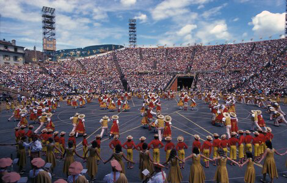
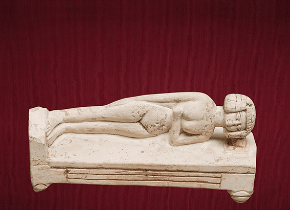
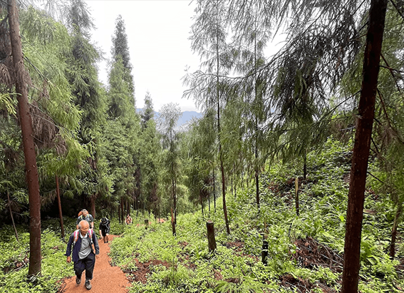
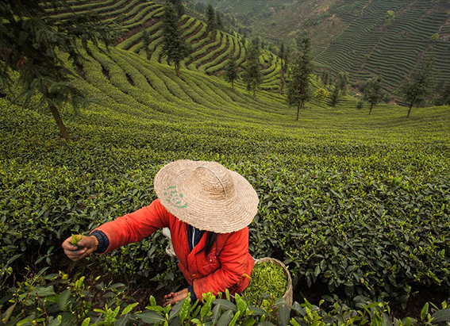

NATIONAL GEOGRAPHIC
This wine festival only happens once every 20 years
TRAVEL
- 
This summer, the quiet town of Vevey tops the oenophile itinerary. Starting on July 18, 2019, and running over three weeks, the village of less than 20,000 will welcome around 400,000 visitors for the Fête des Vignerons, one of the world’s largest if most infrequent—wine festivals.
Founded in 1797, the festival was initiated by the Confrérie des Vignerons, or Brotherhood of Winegrowers, to promote the region’s wine harvest, one of the area’s largest industries. Over the centuries, the winegrowers’ festival has evolved from a one-day feast into an all-out extravaganza with tastings, live music, parades, costume parties, wine education, and cellar tours.
While the region’s pinot noirs may be subtle, the celebrations are elaborate, with 5,000 local artisans, actors, and volunteers participating in a series of 20 wine- themed performances. There’s also an over-the-top, three-and-a-half hour inaugural show directed by Daniele Finzi Pasca, a Cirque du Soleil artistic director that could rival an Olympic opening ceremony.
The event isn’t just special for its size and bacchanalian revelry but rather its rarity: the festival is held only once every 20 years. So remarkable is the Fête des Vignerons’ cultural scope and spectacle that in 2016 the event was awarded status as UNESCO Intangible Cultural Heritage.
Even if you’re not a wine lover, the Fêtes Des Vignerons is a lavish affair steeped in Swiss winemaking and culinary culture an opportunity to experience a once-in-a- generation festival.
How to go
The one-hour train ride from Geneva to Vevey is your best bet for a relaxing, spectacularly scenic ride through the Lavaux vineyards. Tickets to an official performance range from $80 to $350, but there are plenty of gratis, family friendly, non-alcoholic events.
Where to stay
The historic Grand Hôtel du Lac is in the heart of the festivities with an ideal lakeside location and a Michelin-starred restaurant. Elegant Hôtel des Trois Couronnes has a well-appointed spa and Le Baron Tavernier in the nearby village of Chexbres is surrounded by vineyards.
What to do
Whether or not you’re into wine, Vevey offers lots to do. Set in the sprawling estate he called home for 25 years, Chaplin’s World is an entire museum dedicated to the legendary Charlie Chaplin. The self-declared “world’s first-ever food-themed museum,” the Alimentarium is especially famous for the massive fork sculpture in Lake Geneva just outside its doorstep. If you’re traveling with children, check out Nest, an interactive museum dedicated to Nestlé, which is headquartered in Vevey
Comments :
- john Very good
- john Very good
Leave a Reply
Your email address will not be published. Required fields are marked*
Related posts:
-
The world's oldest nightmare came from Egypt. What hidden meanings did it hold
Falling. Being chased by monsters. Showing up to school naked. These may be common common scary dreams today, but the world's oldest nightmare was a lot less action packed. The 4,000-year-old Egyptian
View article -
China’s beloved drunken poet died centuries ago or did he
Born in 701, Li Bai famously began composing verse at age 10, trained as master swordsman in his teens (fatally dispatching several opponents in duels), and spent much of his Byronic life wandering the Chinese countryside seeking
View article -
At a remote temple in China, a Kung Fu master keeps the past alive
The hill was corduroyed in green hedgerows of Camilla sinesis, the tree first domesticated to please the palates of tea drinkers some 3,000 years ago. The sword belonged to Yu Chengzhang. Uncle Yu was a martial artist
View article